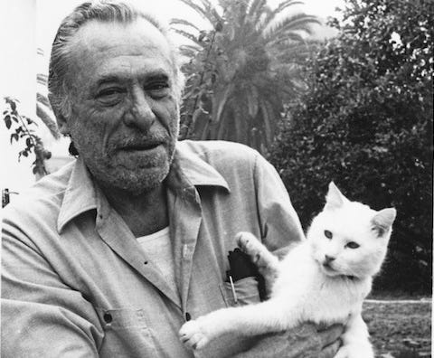

Hi, I'm Torsten Buschhaus and I am currently taking CS195 --- Fullstack web development. My goals for this course are to:
as for fun facts, well I read a lot of Charles Bukowski (who was by all accounts flawed, at times awful, but a man with stores and a way to tell them). One thing that strikes me about Bukowski and what I will be using for my image requirement for this project was his love of cats. He hated most people, but loved every cat. "A cat walks by and shakes shakespeare of his back"
